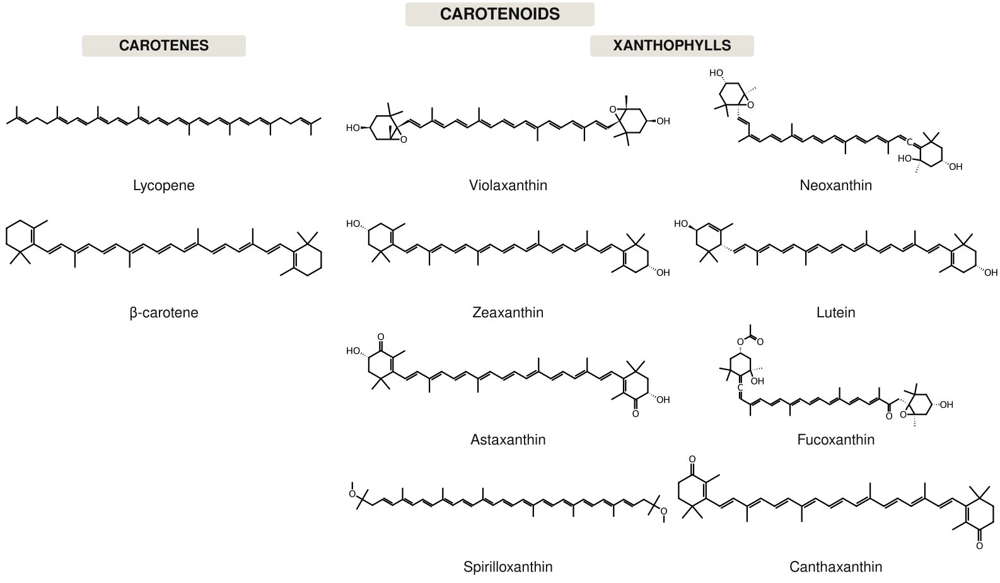

Four of these, and none of them is answered by one section on its own. Each one asks you to pick a method out of the whole lecture, which is the thing I actually want you to be able to do.
Section divider: Questions to Ponder.
I’ve constructed a “yellow pigment device” that makes lutein. My cells are turning yellow. What type of experiment should I do to characterize my device?
I’ve taken my yellow pigment device and joined it to an HIV biosensor device. What experiment should I do to characterize the entire system?
I’m trying to make a “cancer cell adhesion device” that displays a Thomsen-Friedenreich antigen binding lectin on E. coli’s surface. It isn’t working, and I think my lectin part might be a dud. What should I make with the lectin part, and what experiment should I do to see if it works?
I’ve read that a phage protein will covalently attach itself to the 5’ hydroxy of a DNA with a 5’ phosphate. I made a part out of the coding sequence. What should I do to characterize the activity of this part?
You’ll want to confirm that the yellowness is indeed lutein, and probably quantify how much of it you are making. You would do some sort of extraction, such as a methanolic extraction. Since this compound is very hydrophobic and similar to carotene in structure, you might instead use something like acetone. You can then do LCMS to quantify and detect it.
You don’t really need to confirm the lutein structure again – that is unlikely to change, instead you need to compare the system with and without HIV particles present. How you do the measurement is whatever is easiest. You could do the same extraction and LCMS as in #1, but you probably could get away with taking a picture of the cells, or perhaps an absorbance measurement of the yellowness. The key is it is a differential measurement comparing one sample to another, as discussed in the last lecture.
You can express the lectin with a His tag, purify it, then do a binding assay like ELISA.
Express the phage protein with a His tag and purify it. Then, incubate the protein with the DNA. Perhaps you make that DNA as a PCR product with a fluorophore on the 5’ end. You then quench the reaction with something denaturing like urea or guanidinium chloride or SDS. You then run an SDS-PAGE gel. If the interaction is covalent, it will survive denaturation and give a band that is the mass of the DNA as well as the protein, which should be distinguishable from the two substrates. Alternatively, you could do various things with radioactivity.
Four questions to ponder: characterizing a lutein-producing yellow pigment device; characterizing that device joined to an HIV biosensor; testing a suspect lectin part from a cancer cell adhesion device; and characterizing a phage protein that attaches covalently to the 5-prime end of a DNA.
The carotenoids

Lutein is one of these. The carotenoids split in two: the carotenes are pure hydrocarbon, and the xanthophylls are the same backbones carrying oxygen. Lutein is a xanthophyll, and those two hydroxyls make it less hydrophobic than beta-carotene, which is what decides whether methanol or acetone is the better extraction for question one.
The carotenoid family: the carotenes are pure hydrocarbon, the xanthophylls are the same backbones carrying oxygen. Lutein is one of the xanthophylls.